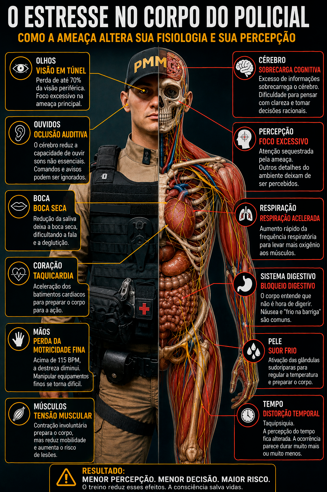
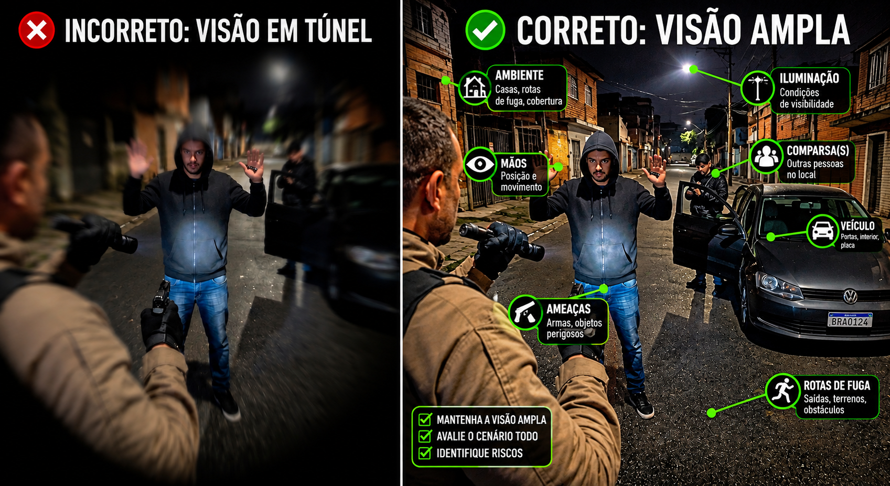
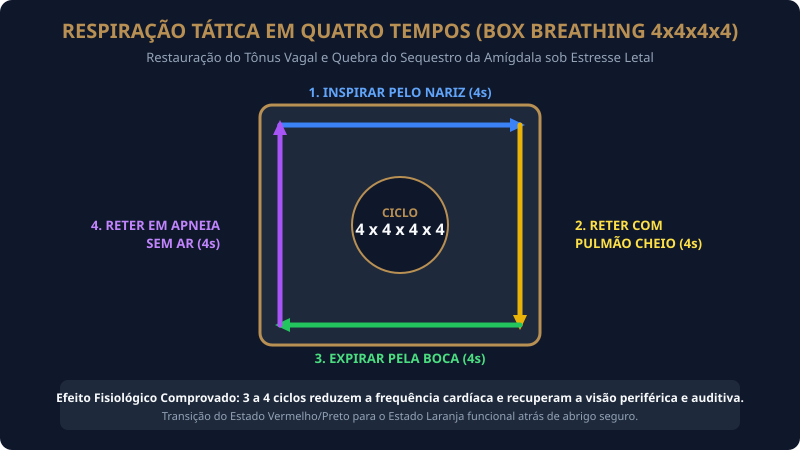

Neurofisiologia do Sobrevivente, Modulação Vagal e Ciclo Decisório sob Sobrecarga Adrenérgica (MTP 01)
No confronto armado, o desempenho técnico e a sobrevivência do policial militar dependem da gestão das alterações fisiológicas provocadas pelo estresse de combate. A compreensão dos efeitos biológicos sobre a percepção sensorial, a motricidade e o ciclo decisório fundamenta os procedimentos padronizados pelo MTP 3.04.01/2020-CG, desde a prontidão preventiva até as ações pós-disparos.
Videoaula — Neurofisiologia do Combate Armado: Do Estresse Operacional à Estabilização Tática. (Full HD 1080p • Central Virtual de Treinamento - CVT / PMMG)
Condição Amarela em patrulhamento ostensivo; foco atencional e antecipação tática (115–145 BPM).
Ativação do Sistema Nervoso Simpático; elevação de pulso, visão em túnel e exclusão auditiva.
Tomada de decisão em frações de segundo e emprego prioritário de motricidade grossa.
Protocolo 4x4x4x4 para modulação parassimpática, abrigo balístico e varredura 360°.
Acompanhamento biopsicossocial institucional no Núcleo de Atenção Integral à Saúde.
A reação sob fogo é decidida antes do primeiro disparo. O policial que patrulha desligado do ambiente sofre o startle reflex (reflexo de sobressalto), paralisando temporariamente o processamento cognitivo. A PMMG adota a escala de foco atencional estruturada para manter a guarnição sempre na zona ideal de resposta:
Desconectado do ambiente, focado em pensamentos internos ou celular. Estritamente proibido no serviço operacional por elevar a vulnerabilidade da equipe ao nível crítico.
Estado padrão de patrulhamento ostensivo. Consciência situacional ativa, varredura em 360° e leitura contínua de pessoas e veículos sem tensão muscular desnecessária.
Detecção de anomalia, indivíduo em fundada suspeita ou indício de emboscada. O policial define mentalmente o plano de ação imediato e localiza abrigos balísticos no terreno.
A agressão letal foi deflagrada ou é iminente. O militar executa a transição imediata para a ação em legítima defesa sob controle doutrinário.
Ao reconhecer uma ameaça de morte iminente, a amígdala cerebral ativa instantaneamente o Sistema Nervoso Simpático (SNS). Glândulas suprarrenais inundam a corrente sanguínea com adrenalina e noradrenalina, gerando alterações fisiológicas que fogem ao controle voluntário direto:

Figura 1 — Cascata Neurofisiológica sob Estresse Agudo de Combate. (Fonte: Siddle, 1995; Grossman, 2008 / APM PMMG. Toque na imagem para ampliar)
Efeitos Fisiológicos Observados: Tremores nas mãos, sudorese, taquicardia e respiração acelerada decorrem da liberação hormonal de adrenalina e noradrenalina pelo Sistema Nervoso Simpático. A compreensão desses efeitos assegura que o operador mantenha a concentração nas ações de tiro e proteção.
Sob sobrecarga adrenérgica severa, o cérebro fecha canais sensoriais periféricos para focar no ponto da ameaça imediata. Essa alteração gera dois bloqueios perceptivos durante o confronto:

Figura 2 — Estreitamento do Campo Visual Periférico (Visão em Túnel). (Fonte: Force Science Institute / APM PMMG)
O militar perde até 70% do seu campo visual periférico e pode deixar de ouvir disparos efetuados por seu companheiro a poucos metros. Procedimento doutrinário: movimentar a cabeça para os lados para quebrar o foco restrito e utilizar comandos verbais objetivos e padronizados.
A vasoconstrição periférica reduz a irrigação sanguínea nas extremidades dos dedos. Travas diminutas ou comandos delicados tornam-se ineficazes sob estresse agudo.
A doutrina de tiro da PMMG prioriza movimentos de grupos musculares amplos: empunhadura bimanual firme, golpeio de ferrolho com a palma espalmada e saque em coldre de retenção intuitiva.
Mesmo com a elevação dos batimentos cardíacos, o processo de tomada de decisão do policial militar deve seguir as etapas estruturadas pelo MTP 3.04.01/2020-CG:
Varredura rápida do ambiente e percepção sensorial de indivíduo ou veículo que apresente comportamento de risco.
Confirmação da existência de arma de fogo e agressão atual ou iminente. A certificação consciente evita disparos contra pessoas desarmadas ou portando objetos cotidianos.
Seleção do meio de força proporcional e legalmente adequado para repelir a agressão letal.
Execução biomecânica precisa: alinhamento dos aparelhos de pontaria e disparos controlados na massa central do agressor até cessar a agressão.
Vídeo 1 — Casuística Operacional: Reação sob Fogo e Tomada de Decisão em Frações de Segundo. (Fonte: Central Virtual de Treinamento - CVT / PMMG)
Análise da Casuística: Observe na gravação como o tempo real de decisão é inferior a dois segundos. A repetição no treinamento de tiro e a verificação no Certificar fundamentam a intervenção proporcional.
Cessados os disparos, o estado de alerta biológico permanece elevado. O policial militar deve buscar abrigo balístico e aplicar a técnica de respiração diafragmática para estabilizar os batimentos e restabelecer a visão periférica:

Figura 3 — Protocolo Padronizado Box Breathing em 4 Tempos de 4 Segundos. (Fonte: Grossman, 2008 / APM PMMG)
Inspire profundamente pelo nariz projetando o abdômen para fora, permitindo máxima oxigenação pulmonar.
Sustente o oxigênio sem tensionar a musculatura de ombros ou mandíbula.
Esvazie o ar pela boca de forma suave e contínua, estimulando a via do nervo vago e a desaceleração cardíaca.
Mantenha a pausa respiratória de forma estável antes de reiniciar o próximo ciclo de 4 segundos.
Procedimento de Guarnição: Abrigado e com a arma em posição de pronta-resposta, execute de 3 a 4 ciclos de Box Breathing enquanto realiza a varredura visual em 360°, verifica o estado físico do companheiro de guarnição e transmite as informações ao COPOM via rádio.
Concluída a ocorrência no terreno, as alterações fisiológicas e o estresse pós-confronto demandam acompanhamento médico e psicológico institucional:
Após ocorrências com disparos de arma de fogo ou lesões corporais, o encaminhamento ao NAIS (Núcleo de Atenção Integral à Saúde) e à SAS (Seção de Assistência à Saúde) é procedimento institucional padronizado para acompanhamento biopsicossocial do efetivo.
Alterações temporárias de sono, tremores residuais, hipervigilância ou recordações recorrentes do evento constituem reações fisiológicas esperadas diante de confronto armado. O acompanhamento especializado visa restabelecer o equilíbrio e a saúde integral do militar.
Acompanhamento de Guarnição: Cabe ao Comandante de Guarnição e aos companheiros de equipe observar sinais de isolamento ou sofrimento mental após o incidente, assegurando o pronto encaminhamento do policial militar aos profissionais do NAIS/SAS.
Avalie o cenário operacional abaixo com base na linha de conduta ensinada nesta instrução:
Normatização ABNT NBR 6023 — Ordenação Alfabética Rigorosa